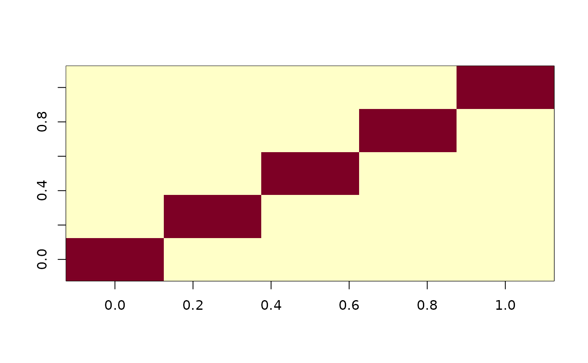
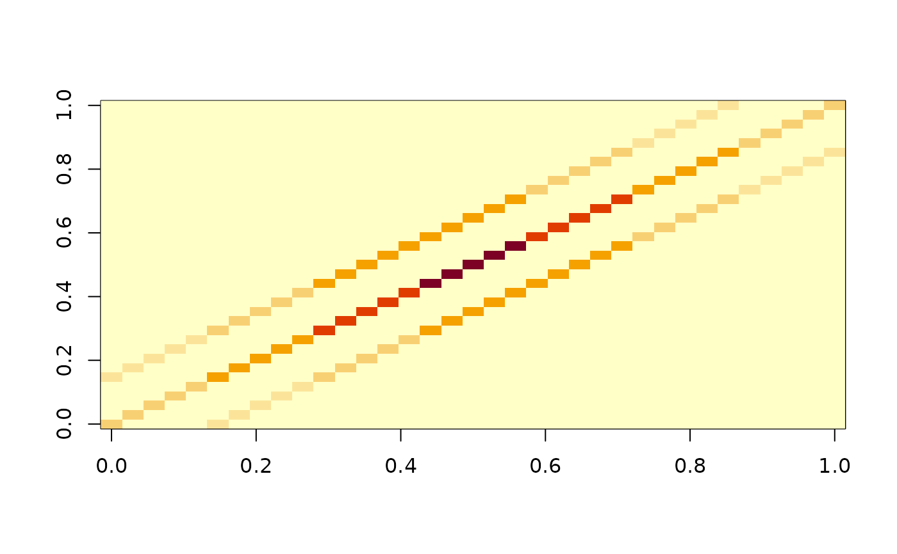

The `basismfd` class represents a set of multidimensional basis functions. This class utilizes basis objects from the `fda` package, such as B-splines and Fourier bases.
Constructor for `basismfd` objects (same as Basismfd(...) )
Active bindings
basisA list of basis objects from the `fda` package.
dimSuppThe dimension of the support domain of the `basismfd` object.
suppThe matrix representing the ranges of the dimensions.
gramThe Gram matrix.
nbasisA numeric vector containing the number of bases.
Methods
Method new()
The constructor function for objects of the class `basismfd` (same as Basismfd(...) )
Usage
basismfd$new(...)Method eval()
Evaluate the `basismfd` object at given argument values
Method print()
Print method for `basismfd` objects
Examples
require(fda)
#> Loading required package: fda
#> Loading required package: splines
#> Loading required package: fds
#> Loading required package: rainbow
#> Loading required package: MASS
#> Loading required package: pcaPP
#> Loading required package: RCurl
#> Loading required package: deSolve
#>
#> Attaching package: ‘fda’
#> The following object is masked from ‘package:graphics’:
#>
#> matplot
#> The following object is masked from ‘package:datasets’:
#>
#> gait
bs1 <- create.fourier.basis(c(0, 2 * pi), 5)
bs2 <- create.bspline.basis(c(0, 1), 7)
bs3 <- create.exponential.basis(c(0, 2), 3)
# 1-D Basis ######## (similar to the fd features)
mdbs1 <- Basismfd(bs1)
mdbs1$basis
#> [[1]]
#> $call
#> basisfd(type = type, rangeval = rangeval, nbasis = nbasis, params = params,
#> dropind = dropind, quadvals = quadvals, values = values,
#> basisvalues = basisvalues)
#>
#> $type
#> [1] "fourier"
#>
#> $rangeval
#> [1] 0.000000 6.283185
#>
#> $nbasis
#> [1] 5
#>
#> $params
#> [1] 6.283185
#>
#> $dropind
#> numeric(0)
#>
#> $quadvals
#> NULL
#>
#> $values
#> list()
#>
#> $basisvalues
#> list()
#>
#> $names
#> [1] "const" "sin1" "cos1" "sin2" "cos2"
#>
#> attr(,"class")
#> [1] "basisfd"
#>
mdbs1$dimSupp
#> [1] 1
mdbs1$nbasis
#> [1] 5
mdbs1$supp
#> [,1]
#> [1,] 0.000000
#> [2,] 6.283185
mdbs1$gram
#> 5 x 5 Matrix of class "dsyMatrix"
#> [,1] [,2] [,3] [,4] [,5]
#> [1,] 1.000000e+00 -1.040211e-16 -1.382536e-16 8.367298e-17 -6.370014e-17
#> [2,] -1.040211e-16 1.000000e+00 3.690370e-17 -5.743803e-17 -1.355597e-16
#> [3,] -1.382536e-16 3.690370e-17 1.000000e+00 -1.432435e-16 -1.754345e-16
#> [4,] 8.367298e-17 -5.743803e-17 -1.432435e-16 9.999986e-01 -8.323824e-17
#> [5,] -6.370014e-17 -1.355597e-16 -1.754345e-16 -8.323824e-17 1.000001e+00
mdbs1$eval(1:7 / 10)
#> [[1]]
#> const sin1 cos1 sin2 cos2
#> [1,] 0.3989423 0.05632497 0.5613710 0.1120872 0.55294335
#> [2,] 0.3989423 0.11208717 0.5529434 0.2197058 0.51965302
#> [3,] 0.3989423 0.16672942 0.5389909 0.3185654 0.46564576
#> [4,] 0.3989423 0.21970577 0.5196530 0.4047248 0.39307467
#> [5,] 0.3989423 0.27048689 0.4951229 0.4747492 0.30483293
#> [6,] 0.3989423 0.31856540 0.4656458 0.5258467 0.20443847
#> [7,] 0.3989423 0.36346091 0.4315160 0.5559805 0.09589369
#>
image(as.matrix(mdbs1$gram))

####### 2-D Basis ######## (fd cannot handle this)
mdbs2 <- Basismfd(bs1, bs2)
mdbs2$basis
#> [[1]]
#> $call
#> basisfd(type = type, rangeval = rangeval, nbasis = nbasis, params = params,
#> dropind = dropind, quadvals = quadvals, values = values,
#> basisvalues = basisvalues)
#>
#> $type
#> [1] "fourier"
#>
#> $rangeval
#> [1] 0.000000 6.283185
#>
#> $nbasis
#> [1] 5
#>
#> $params
#> [1] 6.283185
#>
#> $dropind
#> numeric(0)
#>
#> $quadvals
#> NULL
#>
#> $values
#> list()
#>
#> $basisvalues
#> list()
#>
#> $names
#> [1] "const" "sin1" "cos1" "sin2" "cos2"
#>
#> attr(,"class")
#> [1] "basisfd"
#>
#> [[2]]
#> $call
#> basisfd(type = type, rangeval = rangeval, nbasis = nbasis, params = params,
#> dropind = dropind, quadvals = quadvals, values = values,
#> basisvalues = basisvalues)
#>
#> $type
#> [1] "bspline"
#>
#> $rangeval
#> [1] 0 1
#>
#> $nbasis
#> [1] 7
#>
#> $params
#> [1] 0.25 0.50 0.75
#>
#> $dropind
#> NULL
#>
#> $quadvals
#> NULL
#>
#> $values
#> list()
#>
#> $basisvalues
#> list()
#>
#> $names
#> [1] "bspl4.1" "bspl4.2" "bspl4.3" "bspl4.4" "bspl4.5" "bspl4.6" "bspl4.7"
#>
#> attr(,"class")
#> [1] "basisfd"
#>
mdbs2$dimSupp
#> [1] 2
mdbs2$nbasis
#> [1] 5 7
mdbs2$supp
#> [,1] [,2]
#> [1,] 0.000000 0
#> [2,] 6.283185 1
dim(mdbs2$gram)
#> [1] 35 35
arg_mdbs <- list(1:10, 1:9 / 10)
mdbs2$eval(arg_mdbs)
#> [[1]]
#> const sin1 cos1 sin2 cos2
#> [1,] 0.3989423 0.47474916 0.3048329 0.5130161 -0.23478571
#> [2,] 0.3989423 0.51301614 -0.2347857 -0.4269801 -0.36877892
#> [3,] 0.3989423 0.07961844 -0.5585435 -0.1576433 0.54171807
#> [4,] 0.3989423 -0.42698008 -0.3687789 0.5581856 -0.08208960
#> [5,] 0.3989423 -0.54101509 0.1600393 -0.3069310 -0.47339542
#> [6,] 0.3989423 -0.15764331 0.5417181 -0.3027289 0.47609361
#> [7,] 0.3989423 0.37066500 0.4253438 0.5588904 0.07714571
#> [8,] 0.3989423 0.55818562 -0.0820896 -0.1624321 -0.54030150
#> [9,] 0.3989423 0.23251296 -0.5140502 -0.4236992 0.37254381
#> [10,] 0.3989423 -0.30693104 -0.4733954 0.5150742 0.23023565
#>
#> [[2]]
#> bspl4.1 bspl4.2 bspl4.3 bspl4.4 bspl4.5 bspl4.6 bspl4.7
#> [1,] 0.216 0.592 0.181333333 0.01066667 0.000000000 0.000 0.000
#> [2,] 0.008 0.416 0.490666667 0.08533333 0.000000000 0.000 0.000
#> [3,] 0.000 0.128 0.588000000 0.28266667 0.001333333 0.000 0.000
#> [4,] 0.000 0.016 0.409333333 0.53866667 0.036000000 0.000 0.000
#> [5,] 0.000 0.000 0.166666667 0.66666667 0.166666667 0.000 0.000
#> [6,] 0.000 0.000 0.036000000 0.53866667 0.409333333 0.016 0.000
#> [7,] 0.000 0.000 0.001333333 0.28266667 0.588000000 0.128 0.000
#> [8,] 0.000 0.000 0.000000000 0.08533333 0.490666667 0.416 0.008
#> [9,] 0.000 0.000 0.000000000 0.01066667 0.181333333 0.592 0.216
#>
image(as.matrix(mdbs2$gram))
